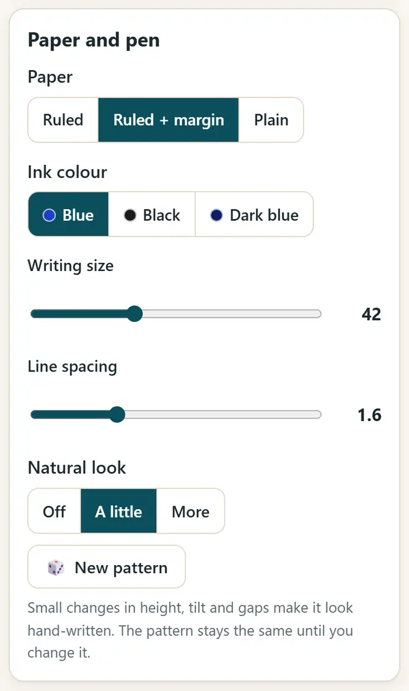

ટેક્સ્ટને મફતમાં હસ્તાક્ષરમાં બદલો
કોઈ કવિતા, શુભેચ્છા, દીવાલનું પોસ્ટર કે પોતાની નોંધની ચોખ્ખી નકલ ઘણી વાર ટાઇપ કરતાં હાથના લખાણમાં વધારે સારી લાગે છે. આ મફત ઍપ તમારો ટેક્સ્ટ તમારા બ્રાઉઝરમાં જ નોટબુકના પાના પર લખી આપે છે. પહેલાં એક સાચી વાત: આ નોંધ અને સર્જનાત્મક કામ માટે છે. શાળાનું જે કામ હાથે લખવાનું હોય, તે વિદ્યાર્થીએ જાતે લખવું જોઈએ.
ટૂંકો જવાબ
ટેક્સ્ટથી હસ્તાક્ષર ખોલો, તમારો ટેક્સ્ટ લખો કે પેસ્ટ કરો, અને “કાગળ”, “શાહીનો રંગ” તથા “અક્ષરનું માપ” પસંદ કરો. “સાચા લખાણ જેવું” પસંદ કરો, જેથી અક્ષરો સાચા લખાણની જેમ થોડા હલે. ચિત્ર માટે “આ પાનું ડાઉનલોડ કરો” દબાવો, કે “પ્રિન્ટ / PDF તરીકે સેવ કરો” દબાવીને Save as PDF પસંદ કરો.
5 પગલાંમાં ટેક્સ્ટમાંથી હસ્તાક્ષર
-
તમારો ટેક્સ્ટ લખો કે પેસ્ટ કરો
ટેક્સ્ટથી હસ્તાક્ષર ખોલો. તે એક નમૂનાના પાના સાથે ખૂલે છે. બૉક્સમાં તમારો ટેક્સ્ટ લખો કે પેસ્ટ કરો: તમે લખો તેમ પાનું બદલાય છે. ઇચ્છો તો પહેલા પાના માટે મથાળું અને તારીખ પણ લખો.
-
કાગળ અને શાહી પસંદ કરો
“કાગળ”માં “લીટીવાળો”, “લીટી + હાંસિયો” કે “કોરો” પસંદ કરો. “શાહીનો રંગ”માં વાદળી, કાળી કે ઘેરી વાદળી પસંદ કરો.

કાગળ, શાહીનો રંગ, લખાણનું માપ અને કુદરતી દેખાવ પસંદ કરો. -
માપ અને અંતર નક્કી કરો
પાનું સાચી નોટબુકના પાના જેવું દેખાય અને વાંચવામાં સહેલું લાગે ત્યાં સુધી “અક્ષરનું માપ” અને “લીટીઓ વચ્ચેનું અંતર” ખસેડો.
-
કુદરતી દેખાવ આપો
“સાચા લખાણ જેવું”થી ઊંચાઈ, ઢાળ અને અંતરમાં નાના ફેરફાર આવે છે, જેવા સાચા લખાણમાં હોય છે. જુદા દેખાવ માટે “નવી ભાત” દબાવો.
-
ડાઉનલોડ કરો કે પ્રિન્ટ કરો
લાંબો ટેક્સ્ટ વધારે પાનાં પર જાય છે, એક વારમાં 30 સુધી. પાનાના PNG ચિત્ર માટે “આ પાનું ડાઉનલોડ કરો” દબાવો; વધારે પાનાં હોય તો બધાં એકસાથે પણ ડાઉનલોડ કરી શકાય. PDF માટે “પ્રિન્ટ / PDF તરીકે સેવ કરો” દબાવો અને Save as PDF પસંદ કરો.

લીટીવાળા પાના પર હાથે લખેલો ટેક્સ્ટ.
જાણવા જેવું
- આનો પ્રામાણિકપણે ઉપયોગ કરો: પોતાની નોંધ, શુભેચ્છા, કવિતા, પોસ્ટર અને અક્ષરલેખનના અભ્યાસનાં પાનાં માટે. તેને હાથે લખેલા ગૃહકાર્ય કે અસાઇનમેન્ટ તરીકે જમા ન કરાવો. એ કામ વિદ્યાર્થીએ જાતે લખવું જોઈએ.
- હસ્તાક્ષરનો દેખાવ અંગ્રેજી, હિન્દી અને મરાઠીમાં સૌથી સારો આવે છે. ગુજરાતી અને બીજી ભાષાઓ તમારા ડિવાઇસના સામાન્ય ફૉન્ટમાં, થોડી હલતી દેખાય છે.
- થોડા વિચારો: હાથે લખેલી લાગે એવી કવિતા કે શુભેચ્છા, વર્ગખંડની દીવાલ માટે પોસ્ટર, કે અક્ષરલેખનના અભ્યાસમાં જોઈને લખવા માટે ચોખ્ખું પાનું.
- તમારો ટેક્સ્ટ તમારા ડિવાઇસ પર જ રહે છે. કંઈ અપલોડ થતું નથી, તેથી ખાનગી નોંધ ખાનગી જ રહે છે.
નવાં મફત ટૂલ અને હિન્દીમાં AIના પાઠ મેળવો
અમારી ઇમેઇલ યાદીમાં જોડાઓ: નવી મફત ઍપ્સ, નવી માર્ગદર્શિકાઓ અને AI પર હિન્દી વીડિયો પાઠની માહિતી તમને મળતી રહેશે. કોઈ સ્પૅમ નહીં.
ફક્ત પુખ્ત વયના લોકો (18+) માટે. તમે ગમે ત્યારે નામ કઢાવી શકો છો.
અમે આ ટૂલ કેમ સૂચવીએ છીએ
- બધા માટે મફત: જાહેરાત નહીં, સાઇન-અપ નહીં, પેઇડ પ્લાન નહીં.
- ખાનગી: તમારી ફાઇલો અને માહિતી તમારા પોતાના ડિવાઇસ પર જ રહે છે.
- ફોન, લૅપટૉપ કે સ્માર્ટબોર્ડ પર ચાલે છે, અને એક વાર ખૂલ્યા પછી ઇન્ટરનેટ વગર પણ.
- ગુજરાતી અને હિન્દી સહિત 12 ભાષાઓમાં.
વીડિયોથી શીખવું ગમે છે? અમારી YouTube ચૅનલ પર AI અને મફત ટૂલના હિન્દી પાઠ જુઓ.
વારંવાર પૂછાતા પ્રશ્નો
ટેક્સ્ટને મફતમાં હસ્તાક્ષરમાં કેવી રીતે બદલવો?
ઍપ ખોલો, તમારો ટેક્સ્ટ પેસ્ટ કરો, કાગળ અને શાહી પસંદ કરો અને પાનું ડાઉનલોડ કરો. તે મફત છે, સાઇન-અપ વગર અને વોટરમાર્ક વગર.
શાળાના અસાઇનમેન્ટ માટે આ વાપરી શકાય?
આને પોતાની નોંધ અને સર્જનાત્મક વસ્તુઓ માટે વાપરો. શિક્ષકે હાથે લખેલું કામ માગ્યું હોય, તો તે જાતે લખો. લખવું પણ શીખવાનો ભાગ છે, અને બનાવેલું પાનું પોતાના હસ્તાક્ષર કહીને આપવું પ્રામાણિક નથી.
શું તે ગુજરાતી અને હિન્દી માટે ચાલે છે?
હિન્દી અને મરાઠી માટે અહીં અંગ્રેજીની જેમ હસ્તાક્ષરનો ફૉન્ટ છે. ગુજરાતી અને બીજી લિપિઓનો ટેક્સ્ટ પણ પાના પર આવે છે, પણ તમારા ડિવાઇસના સામાન્ય ફૉન્ટમાં.
PDF મળી શકે?
હા. “પ્રિન્ટ / PDF તરીકે સેવ કરો” દબાવો અને પ્રિન્ટ વિન્ડોમાં Save as PDF પસંદ કરો. બધાં પાનાં એક જ PDFમાં આવે છે. “આ પાનું ડાઉનલોડ કરો”થી એક પાનું ચિત્ર તરીકે સેવ થાય છે.
શું આ મારા પોતાના હસ્તાક્ષર છે?
ના. ઍપ હાથના લખાણ જેવો દેખાતો એક ફૉન્ટ વાપરે છે. તે તમારા કે બીજા કોઈના હસ્તાક્ષરની નકલ કરતી નથી.
ઉપયોગી લાગી?
કોઈ મિત્ર, સહકર્મીઓ કે તમારી શાળાના WhatsApp ગ્રુપમાં મોકલો.